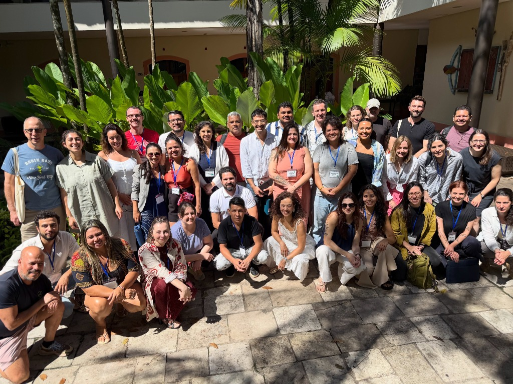
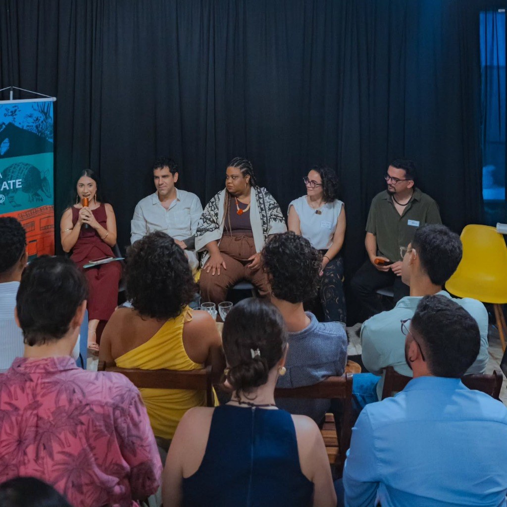
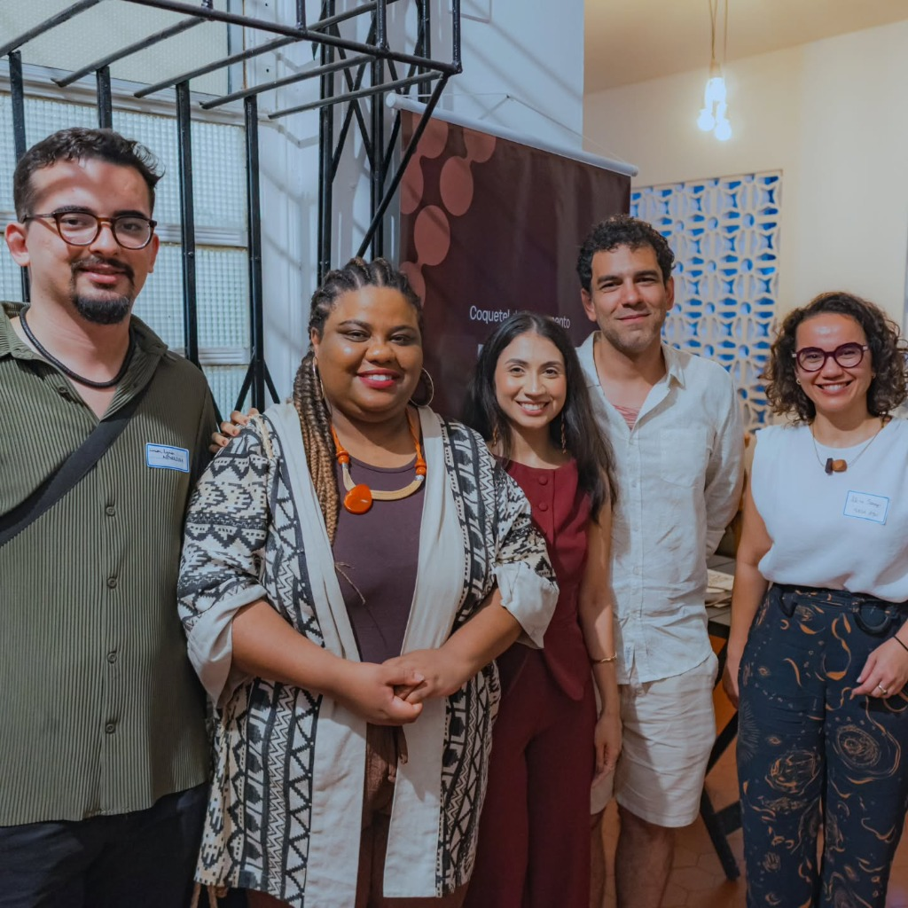
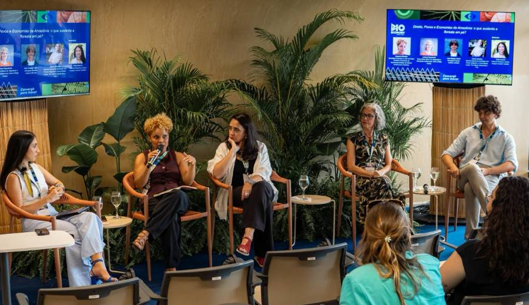

Fortalecendo o Estado de Direito na Amazônia Brasileira
A Aliança Jurídica pela Amazônia (AJA) é uma rede jurídica diversa e representativa que conecta advogados, pesquisadores, organizações da sociedade civil, clínicas de direito e coletivos de base para potencializar a justiça socioambiental, povos e territórios.
Uma rede jurídica diversa e representativa pelo fortalecimento do Estado de Direito
Aliança Jurídica pela Amazônia (AJA) é uma rede jurídica diversa e representativa que visa o fortalecimento do Estado de Direito na Amazônia Brasileira, formada por advogados, pesquisadores, organizações da sociedade civil, clínicas de direito, coletivos jurídicos de base e demais profissionais comprometidos com a defesa da justiça socioambiental que atuam na ou pela Amazônia.
A AJA atua como um espaço articulador e colaborativo, conectando e potencializando atores e iniciativas já existentes; incentivando o diálogo e a cooperação em temas transversais e valorizando a diversidade de saberes, jurídicos e tradicionais, para enfrentar de forma integrada os desafios da região, contribuindo para a proteção de direitos humanos e socioambientais, e para a segurança jurídica de povos e territórios.
Com enfoque no protagonismo amazônida, a AJA busca influenciar mudanças estruturais no ecossistema jurídico e institucional da região, apoiando o fortalecimento das instituições de justiça, da democracia ambiental e da governança territorial, promovendo ações que visam a construção de uma Amazônia mais justa, segura, próspera e regenerativa.
"Mais do que uma articulação jurídica, a AJA é um movimento por um futuro no qual a floresta e seus povos tenham voz, proteção e centralidade na formulação das decisões que afetam seus territórios."

Integrantes da AJA em encontro da rede
Conectando advogados, pesquisadores e organizações pelos direitos territoriais.

Espaços de construção contínua e incidência política
Nossa História: Da inquietação à construção de uma aliança permanente
A Aliança Jurídica pela Amazônia (AJA) nasce de uma inquietação compartilhada. Uma inquietação que não surgiu de um único lugar, nem de uma única voz, mas de experiências acumuladas no tempo por profissionais que pesquisam, resistem e atuam com o Direito na Amazônia.
"O que podemos fazer juntos para fortalecer a atuação jurídica no combate a tantos conflitos socioambientais e violações de direitos na Amazônia?"

Coquetel de Lançamento da AJA
Mobilização e integração dos membros fundadores da rede.
O Diagnóstico Compartilhado e as Assimetrias do Campo
Antes do seu lançamento, durante a COP 30, a AJA já se manifestava como um diagnóstico compartilhado. Conversas informais e diálogos bilaterais entre advogados, pesquisadoras e organizações que atuam na Amazônia revelavam uma certa recorrência na fragmentação do campo jurídico, na baixa articulação entre diferentes áreas do Direito e na ausência de um espaço capaz de promover convergência estratégica em torno da defesa socioambiental e dos direitos territoriais na região. Essa inquietação não partiu de um único ator, mas de múltiplas trajetórias que se encontravam na percepção de que os desafios amazônicos exigem respostas jurídicas sistêmicas, integradas e de longo prazo.
A prática nos territórios evidenciava, também, a necessidade dessa articulação. De um lado, observava-se a pujância da advocacia corporativa privada, estruturada e com alta capacidade de incidência. De outro, observava-se a advocacia voltada à defesa de direitos humanos, ambientais e de povos e comunidades tradicionais marcada por assimetrias profundas de recursos, apoio técnico e proteção institucional. Além disso, a discussão sobre temas estratégicos para o futuro da Amazônia, como restauração ecológica, bioeconomia, financiamento climático e mercados regenerativos, carecem de mais protagonismo e articulação jurídica, limitando a capacidade de incidência em espaços de decisão nacionais e internacionais.
A Janela de Oportunidade e o Processo Coletivo
Diante desse cenário, um grupo de advogados, pesquisadores e organizações de direitos humanos e ambientais enxergou uma janela de oportunidade política com a realização da COP30 em Belém. A centralidade da Amazônia no debate climático global reforçou a necessidade de garantir uma presença jurídica estratégica, coordenada e alinhada com as lutas dos territórios. Experiências de outros países da Pan-Amazônia, como a Colômbia, já estavam demonstrando que articulações jurídicas bem estruturadas são capazes de influenciar agendas, produzir posicionamentos comuns e ampliar o impacto político da atuação jurídica em contextos multilaterais.
Com efeito, em maio de 2025, impulsionado e gerenciado pelo time de “rule of law” da Amazon Investor Coalition, iniciou-se um processo estruturado de construção coletiva da AJA. Pautado por uma metodologia colaborativa, horizontal e plural, durante 7 (sete) meses, mais de 25 profissionais de diferentes áreas do Direito, vinculados a organizações da sociedade civil, coletivos de advocacia popular, entidades de pesquisa acadêmica, escritórios de advocacia e outras frentes de atuação se reuniram para definir propósitos, princípios, formas de governança e estratégias de atuação.
A escolha pelo modelo de aliança reflete uma decisão estratégica: articular atores autônomos, preservar suas identidades institucionais e potencializar, de forma coordenada, as agendas já existentes. A AJA foi concebida como um catalisador político-jurídico, capaz de validar, conectar e amplificar ações, pesquisas e estratégias desenvolvidas por seus membros, fortalecendo sua incidência sistêmica sem centralizar ou substituir iniciativas.
Nossa Atuação: Espaços de Construção Contínua
A atuação da AJA é estruturada em espaços de construção contínua: as reuniões plenárias, que reúnem todos os membros para alinhamento estratégico e tomada de decisões coletivas, e os Grupos Temáticos (GTs), que são o coração do trabalho técnico e colaborativo da rede.
Reuniões Plenárias e Grupos Temáticos (GTs)
As plenárias reúnem a totalidade de membros para alinhamentos estratégicos horizontais, enquanto os GTs atuam como polos vivos de produção de conhecimento, desenho de estratégias e articulações práticas para responder aos desafios centrais da Amazônia.
Membros associados integram um ou mais GTs de acordo com sua área técnica de incidência.
Inscrever-se para um GT arrow_forwardGT de Território, Segurança e Acesso à Justiça
Entre as frentes estratégicas da Aliança Jurídica pela Amazônia, o GT de Território, Segurança e Acesso à Justiça atua na construção de respostas integradas para os desafios que envolvem direitos territoriais, segurança pública e garantia de direitos na região.
O grupo trabalha com temas como direitos territoriais, regularização e gestão fundiária, territórios tradicionais e Amazônia urbana, além de segurança pública e enfrentamento a crimes ambientais.
O GT busca discutir e construir estratégias transversais, produzindo conhecimento coletivo, elaborando propostas e articulando respostas integradas. Parte do entendimento de que proteger o território é também proteger vidas e culturas.
GT de Litigância e Ativismo Judicial
Para construir espaços de coordenação entre profissionais e organizações que atuam estrategicamente no sistema de justiça, o GT de Litigância e Ativismo Judicial fortalece esse campo por meio da troca de experiências, da construção coletiva de estratégias e do fortalecimento da atuação diante dos desafios socioambientais da Amazônia. Embora a AJA não seja uma organização de litigância, entendemos a importância de fomentar esse debate e fortalecer iniciativas que atuam nessa frente.
O grupo atua na construção de estratégias jurídicas voltadas à justiça climática, ao direito ambiental e à defesa de direitos difusos e coletivos.
GT de Finanças Sustentáveis e Economias da Sociobiodiversidade
Na Aliança Jurídica pela Amazônia, os Grupos Temáticos conectam diferentes áreas para enfrentar desafios estratégicos da região. Um deles é o GT de Finanças Sustentáveis e Economias da Sociobiodiversidade, que atua com direito intelectual e cultural associado à sociobiodiversidade, negócios justos, uso da biodiversidade e do conhecimento tradicional, além de bioeconomia e bens ambientais, como carbono, água e PSA.
O grupo articula o campo jurídico com a realidade econômica dos povos e comunidades tradicionais, construindo estratégias para que a bioeconomia também seja uma economia de justiça. Parte do reconhecimento de que a floresta tem valor e trabalha para que esse valor se traduza em direitos, prosperidade e proteção.
Defesa dos Direitos Humanos e Observância aos Direitos dos PIQCTs
Todos os grupos temáticos adotam uma abordagem transversal de defesa aos Direitos Humanos, garantindo observância aos direitos dos povos indígenas, quilombolas e comunidades tradicionais (PIQCTs) nas discussões e decisões de cada GT — colocando a Amazônia no centro, e não na margem, das soluções jurídicas e institucionais.
Estrutura da Aliança Jurídica pela Amazônia
Comitê Executivo
Responsável pela gestão estratégica contínua, representação institucional, articulação política nacional e coordenação operacional permanente das iniciativas da Aliança.
Yanê Amoras
Diretora Executiva
Graduada em Direito pela UFPA, Head de Pesquisa Jurídica na AIC e consultora com foco em relações empresariais e direitos humanos.
Graduada em Direito pela Universidade Federal do Pará (UFPA), Diretora Executiva da Aliança Jurídica pela Amazônia (AJA), Head de Pesquisa Jurídica na Amazon Investor Coalition (AIC) e consultora jurídica com foco em relações empresariais, governança socioambiental e direitos humanos na Amazônia.
Ciro Brito
Diretor de Relacionamentos Institucionais
Advogado especialista em Governança Climática, mestre em Desenvolvimento Sustentável e analista sênior de políticas climáticas no ISA.
Advogado especialista em Governança Climática, mestre em Desenvolvimento Sustentável, Diretor de Relacionamentos Institucionais da Aliança Jurídica pela Amazônia (AJA) e analista sênior de políticas socioambientais e climáticas no Instituto Socioambiental (ISA).
Isayana Silva
Secretária Executiva
Maranhense, filha de quebradeira de coco, Bacharel em Direito, socioambientalista, ativista climática e consultora em sociobioeconomia.
Maranhense, filha de quebradeira de coco babaçu, Bacharel em Direito, socioambientalista e ativista climática. Secretária Executiva da Aliança Jurídica pela Amazônia (AJA), Líder G_DeZ 2026, Alumni IVLP 2024 e consultora em projetos de sociobioeconomia e direitos territoriais.
Thayssa Castro
Assessora de Comunicação
Jornalista amazonense com atuação voltada a causas sociais, ambientais e climáticas na Amazônia e fundadora da newsletter Para Ter um Norte.
Jornalista amazonense com atuação estratégica voltada a causas sociais, ambientais e climáticas na Amazônia. Assessora de Comunicação da Aliança Jurídica pela Amazônia (AJA) e fundadora da newsletter independente Para Ter um Norte.
Conselho Consultivo
Colegiado de juristas de destaque, lideranças comunitárias tradicionais, pesquisadores sêniores e referências socioambientais que orientam as diretrizes estratégicas e éticas da Aliança.
O Conselho Consultivo da Aliança Jurídica pela Amazônia (AJA) encontra-se atualmente em processo de formação.
[Espaço reservado para texto descritivo sobre o Conselho Consultivo — papel institucional, critérios de composição, diversidade epistêmica e atribuições estratégicas a preencher.]
Líderes de Grupos Temáticos (GTs)
Coordenações responsáveis por articular as plenárias temáticas, desenhar teses jurídicas e mobilizar os membros em torno das três frentes de ação prioritárias da Aliança.
Lincon Aguiar
GT Território, Segurança e Acesso à Justiça
Mestre em Educação na Amazônia pela Ufopa e advogado popular do Coletivo Maparajuba.
Mestre em Educação na Amazônia pela Universidade Federal do Oeste do Pará (Ufopa) e advogado popular integrante do Coletivo Maparajuba Advocacia Popular. Atua na coordenação do GT 01 (Território, Segurança e Acesso à Justiça) da Aliança Jurídica pela Amazônia (AJA), com foco na defesa de direitos territoriais e povos tradicionais.
Marina Fiorini
GT Litigância e Ativismo Judicial
Advogada, cofundadora e diretora do Instituto Advocaris, atuando na intersecção entre Direito, Consciência e Regeneração.
Advogada, cofundadora e diretora do Instituto Advocaris, atuando na intersecção entre Direito, Consciência e Regeneração. Co-lidera o GT 02 (Litigância e Ativismo Judicial) da Aliança Jurídica pela Amazônia (AJA), articulando estratégias jurídicas voltadas à justiça climática e à defesa de direitos difusos e coletivos.
Júlia Soares
GT Litigância e Ativismo Judicial
Bacharela em Direito pela USP, atua em direitos dos povos indígenas e comunidades tradicionais, participação social e políticas públicas. Analista de Políticas Públicas Jr. no IDEC.
Bacharela em Direito pela Universidade de São Paulo (USP), atua em direitos dos povos indígenas e comunidades tradicionais, participação social e políticas públicas. É Analista de Políticas Públicas Jr. no Instituto de Defesa de Consumidores (IDEC), no Programa Clima e Consumo, e integra a Rede Energia & Comunidades. É membro e co-líder do GT 02 (Litigância e Ativismo Judicial) da Aliança Jurídica pela Amazônia (AJA).
Isayana Silva
GT Finanças Sustentáveis & Sociobiodiversidade
Bacharel em Direito, socioambientalista, ativista climática, Líder G_DeZ 2026, Alumni IVLP 2024 e consultora em projetos de sociobioeconomia.
Bacharel em Direito, socioambientalista, ativista climática, Líder G_DeZ 2026, Alumni IVLP 2024 e consultora em projetos de sociobioeconomia. Lidera o GT 03 (Finanças Sustentáveis e Economias da Sociobiodiversidade) da Aliança Jurídica pela Amazônia (AJA), conectando o campo jurídico à realidade econômica dos povos e comunidades tradicionais.
Portfólio de Membros da AJA
Uma rede viva e capilarizada que conecta advogados populares, pesquisadores acadêmicos, clínicas de direitos e organizações comprometidas com a defesa dos povos e territórios da Amazônia.
[A preencher — Espaço reservado para o texto institucional que descreve o Portfólio de Membros da Aliança Jurídica pela Amazônia (AJA), sua diversidade de atuação e capilaridade nos territórios.]
Parceiros Institucionais


Editais
Mecanismos públicos e transparentes para mobilização de inteligência jurídica, parcerias e iniciativas na Amazônia.
Nenhuma chamada aberta no momento
Não há editais ou chamadas públicas para artigos com inscrições abertas no momento. Novas oportunidades serão comunicadas oportunamente através dos canais oficiais da Aliança.
Publicações, Artigos e Notas Técnicas

Amazônia VoxAs discussões sobre o Direito no Bioeconomy Amazon Summit
No Bioeconomy Amazon Summit (BAS), em Belém, Isayana Oliveira e Yanê Amoras Lima mostram como a sociobioeconomia amazônica depende da segurança jurídica dos territórios, do reconhecimento das formas comunitárias de organização e do acesso efetivo à justiça.
Empreendedorismo de impacto na Amazônia: quando o capital chega, e a lei não acompanha
No artigo publicado no Portal Migalhas, Melquisedec Negrão Correa Jr. (AJA) analisa as contradições do capital de impacto e propõe salvaguardas para reconhecer as comunidades amazônicas como sujeitos coletivos de direito.
Regularização sem contraditório territorial: a grilagem institucional na Amazônia
No Portal Migalhas, José Vargas Junior (AJA) conceitua a 'grilagem por fluxo' e propõe contraditório territorial mandatório para impedir a titulação ilegítima de terras públicas na Amazônia.
Gerar energia, negar direitos: a construção do racismo energético na Amazônia
Julia Soares (AJA) analisa o racismo energético na Amazônia, demonstrando como falhas de infraestrutura e falta de governança comunitária aprofundam desigualdades socioambientais.
A Amazônia como problema jurídico: por que a proteção do bioma depende da força das instituições
No texto inaugural da parceria AJA & Migalhas, diretores da aliança analisam por que a sobrevivência do bioma amazônico é, antes de tudo, uma questão de solidez jurídica e integridade institucional.
O STF como bússola da política climática: Lições da ADPF 760 para as eleições de 2026
Rafaela Carderone (AJA) analisa no Migalhas o precedente histórico da ADPF 760 e as lições da jurisdição constitucional para as eleições e a governança climática nacional.
Notícias e Comunicados da AJA
Acompanhe as ações, coberturas institucionais, eventos nos territórios e manifestações públicas da Aliança Jurídica pela Amazônia.
Nenhuma notícia publicada no momento
As novidades, coberturas institucionais e comunicados da rede serão divulgados nesta seção assim que publicados.

Vamos Conversar?
A Aliança Jurídica pela Amazônia (AJA) valoriza o diálogo e a colaboração com profissionais, organizações e instituições comprometidas com a justiça socioambiental e o fortalecimento do Estado de Direito na Amazônia.
Entre em contato conosco para saber mais sobre nossas iniciativas, parcerias e formas de atuação.
Assine para receber análises jurídicas exclusivas, notas técnicas sobre julgamentos ambientais e convocações para chamadas da rede.
Faça Parte da Aliança Jurídica pela Amazônia
A Aliança Jurídica pela Amazônia é um espaço aberto à colaboração de advogados(as), pesquisadores(as), organizações da sociedade civil, escritórios de advocacia, coletivos jurídicos e clínicas de direitos que compartilham do nosso propósito e dos princípios que orientam nossa atuação.
Se você acredita em uma Amazônia com justiça, integridade territorial e protagonismo dos povos, queremos caminhar junto com você.
Preencha o formulário de adesão e venha contribuir com esta rede.
Preencha o formulário de adesão e venha contribuir com esta rede.
Em caso de dúvidas, entre em contato pelo e-mail info@ajamazonia.org